Project 02 — UX/UI Design
세대를 초월한 접근성과 기록의 최소화로
꾸준한 당뇨 관리를 돕는 헬스케어 UX 프로젝트입니다.
"I Promise you" 에서 모티브를 얻었습니다.
"당뇨병으로부터 너를 지키도록 약속할게" 신뢰와 책임을 담은 브랜드 네임입니다.
당뇨병 기록 및 관리 모바일 애플리케이션
세대 불문 관리가 쉽고, 효율적이고 정밀적인 처방을 지원하는 것입니다.
뉴모피즘(Neumorphism)을 기반으로 한 신뢰감과 정밀함을 강조한 UI 입니다.
대부분의 혈당 앱은 3개월 평균 통계를 제공하지 않아, 데이터를 외부로 내보내 수작업으로 계산해야 합니다.
혈당 측정기 연동 앱과 기록 앱이 분리되어 있어 수치를 두 번 입력해야 하는 이중 기록의 번거로움이 존재합니다.
당일 피 검사 결과만으로 처방을 받는 구조로, 장기적・종합적인 데이터 분석에 기반한 정밀 처방이 어렵습니다.
혈당 수치를 자동으로 집계해 3개월 총 평균을 산출합니다. 의료진과 즉시 공유 가능한 리포트를 제공합니다.
혈당 측정기와 블루투스로 직접 연동, 측정, 기록, 분석을 하나의 앱에서 완결하도록 합니다.
누적 데이터 기반으로 병원과 주치의랑 실시간으로 연결되도록 합니다. 종합 분석을 통한 정밀 처방을 지원합니다.
복잡한 입력 절차를 줄여 꾸준한 관리가 가능합니다. 기록 스트레스를 해소합니다.
노령층, 청년층 모두 부담 없이 사용할 수 있는 직관적인 인터페이스로 디자인합니다.
누적 데이터로 효율적이고 정밀한 처방 환경을 구현합니다.
연결된 당뇨 기기에서 수치를 바로 수집해 자동으로 기록합니다. 주요 카테고리부터 부가 기록가지 한눈에 확인 가능합니다.
언제든 빠르고 효율적으로 필요한 기록을 남기고 의료진에게 즉각 전달할 수 있습니다.
식단, 운동, 투약 정보를 쉽고 간단하게 기록합니다. 심플한 레이아웃으로 필요한 정보를 직관적으로 확인합니다.
누적된 혈당 데이터를 자동으로 분석해 3개월 평균치를 산출, 정밀 처방의 근거 자료로 활용합니다.
누적된 개인 건강 데이터를 기반으로 병원 및 주치의와 실시간으로 연결합니다. 단순 혈당 기록을 넘어 식이・운동・투약 패턴을 종합 분석하여 더 정확하고 개인화된 처방이 가능한 환경을 만듭니다.
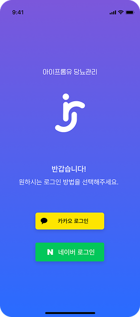
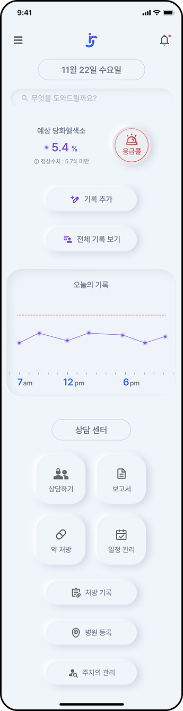
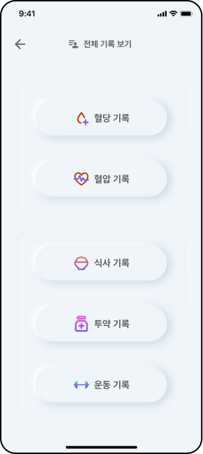
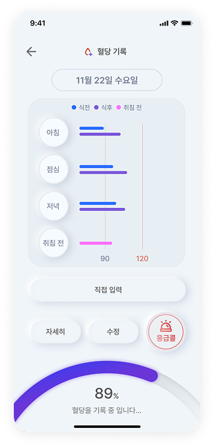
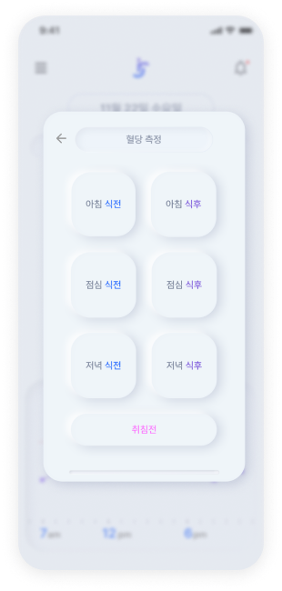
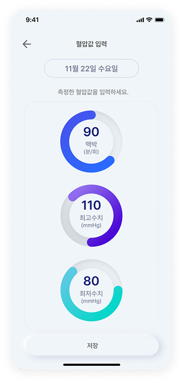
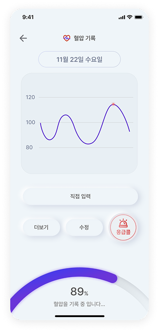
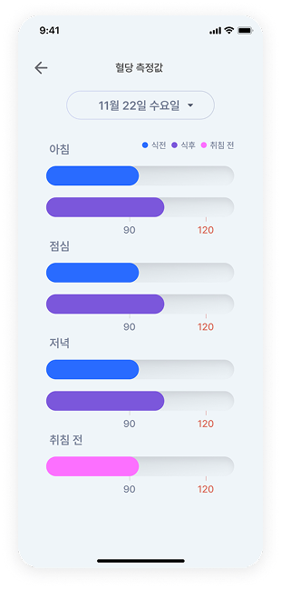
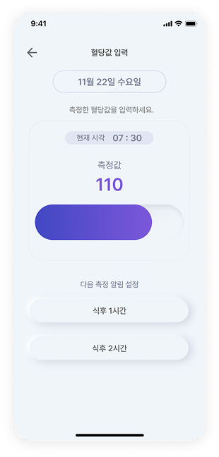
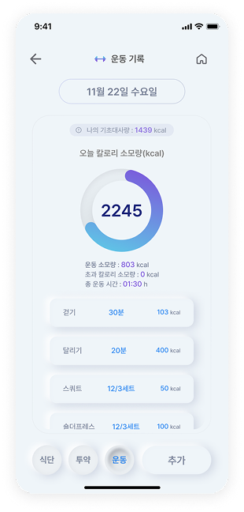
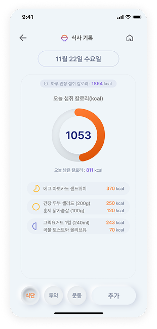
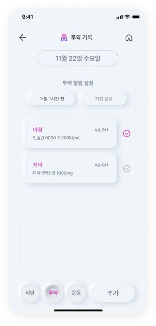
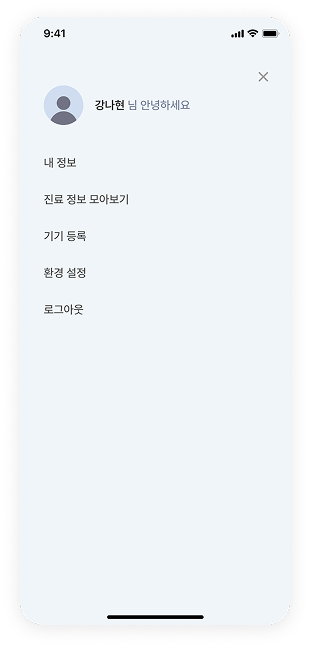
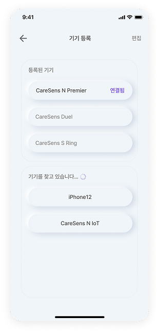